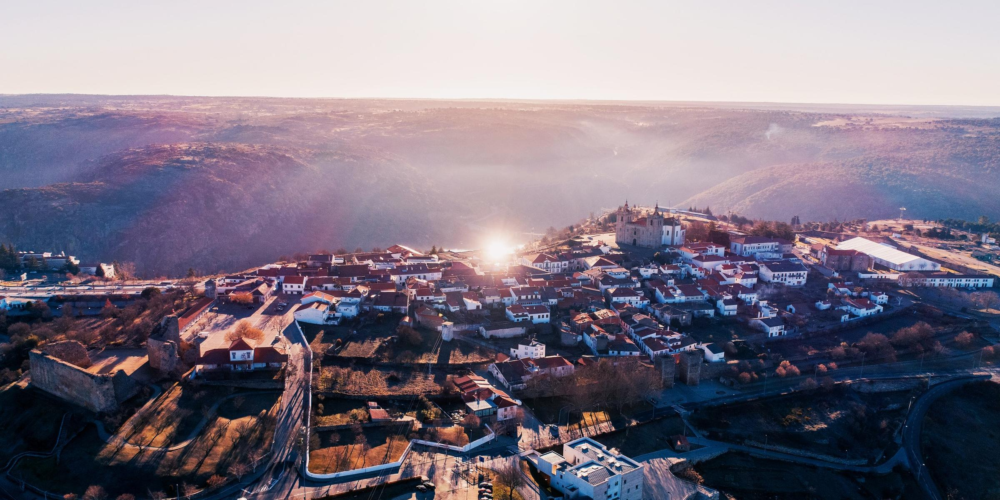

Turismo em Miranda do Douro
| Miranda do Douro é uma cidade raiana portuguesa
localizada na sub-região das Terras de Trás-os-Montes, pertencendo
à região do Norte e ao distrito de Bragança. É sede do Município de Miranda do Douro que tem uma área total de 487,18 km2, 6.466 habitantes em 2021 e uma densidade populacional de 13 habitantes por km2, subdividido em 13 freguesias. O município é limitado a norte e leste pela região espanhola de Castela e Leão, a sudoeste pelo município de Mogadouro e a noroeste por Vimioso. |
 |